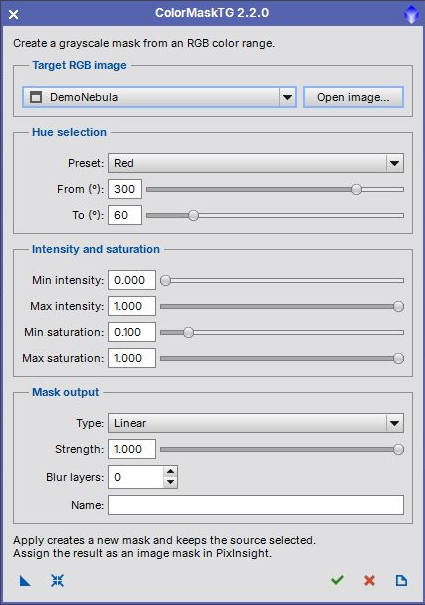

Create grayscale masks from RGB hue, intensity and saturation. User guide for version 2.2.0. [more]
Keywords: color mask, hue, saturation, intensity, TGScripts
[hide]
[hide]
ColorMaskTG creates a separate grayscale mask from a selected hue interval. Intensity and saturation limits refine the selection. The original color-selection expressions and multiscale blur are retained in a compact TGScripts interface.
Requires PixInsight 1.9.5 or later with the V8 JavaScript runtime. Open the repository version with Script > Execute Script File and select src/scripts/TGScripts/ColorMaskTG.js. No image needs to be open when the script starts.
[hide]

The screenshot shows actual PixInsight controls; the selected image is synthetic demonstration data. Applying never modifies the RGB source or automatically attaches the generated mask.
[hide]
Preset
All hues, Red, Yellow, Green, Cyan, Blue and Magenta set the hue endpoints. Editing either endpoint changes the preset to Custom.
From and To
Hue angles run from 0 to 360 degrees. A From value greater than To crosses zero, for example Red at 300 to 60. Equal endpoints cover a full hue cycle. At strengths below 1 the response still varies across that cycle.
Intensity
The minimum and maximum apply to PixelMath I(), the HSI intensity, rather than CIE lightness. Pixels outside the inclusive interval become black.
Saturation
These limits use PixelMath Si(), the HSI saturation. Low-saturation colors can be excluded to avoid selecting nearly neutral pixels. Minimum values must not exceed their maximum.
[hide]
Linear
Uses the hue-selection profile without lightness or chrominance weighting. This is the default.
Chrominance
Multiplies the profile by CIE chrominance.
Lightness
Multiplies the profile by CIE lightness, emphasizing brighter selected pixels.
Inverse lightness
Multiplies the profile by inverse CIE lightness, emphasizing darker selected pixels.
Strength
Range 0 to 1, default 1. Smaller values soften the hue profile; 1 gives full strength within the hue interval. The final PixelMath result is rescaled to 0 to 1, so strength is not a simple multiplier of final mask brightness.
Blur layers
Range 0 to 8, default 0. A positive value removes that many fine-scale layers with MultiscaleLinearTransform, retaining the residual. Larger values produce broader, smoother masks.
Name
Optional image identifier using letters, digits and underscores, with no leading digit. If a name already exists, a numbered suffix is added. The output is a 32-bit floating-point grayscale image without alpha channels.
[hide]
From left to right: New Instance, Reset, Apply, Close and Documentation. Drag New Instance to save the selection settings without binding the RGB target. Apply an instance to another RGB main view, or open it globally to choose an image. Legacy instances with a saved target are still read. Reset restores all mask settings while retaining the selected image. Each Apply creates a separate result.
[hide]
Compact 420-pixel interface, open-first workflow, preset list, repeatable Apply and local PiDoc help. Input ranges and names are validated, duplicate output names are handled safely, and processing errors clean up partial results without locking the source image.
[hide]
Based on ColorMask by Rick Stevenson, with TGScripts modifications by Thorsten Glebe. The source retains the original redistribution conditions and disclaimer.
This product is based on software from the PixInsight project, developed by Pleiades Astrophoto and its contributors (http://pixinsight.com/).
Copyright © 2015-2017 Rick Stevenson; 2022-2026 Thorsten Glebe